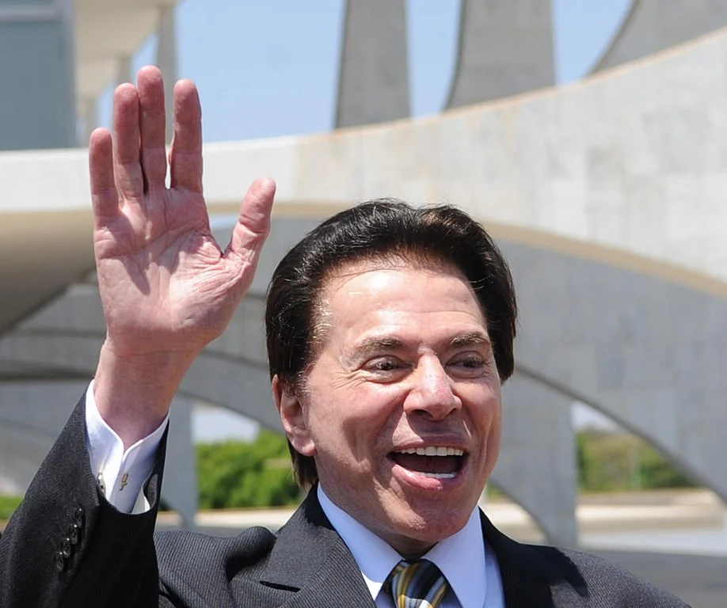

Quem foi Silvio Santos?
Silvio Santos foi um empresário e um dos comunicadores mais conhecidos do Brasil. Entre
as empresas que controlou, destacam-se a emissora de televisão SBT e a empresa de
cosméticos Jequiti.
Nascido no Rio de Janeiro, em 1930, Silvio Santos era o pseudônimo de Senor Abravanel.
Além de sua carreira na televisão, ele também foi dono do banco Panamericano, que foi
posteriormente comprado pelo BTG Pactual
no início da década de 2010.
Uma curiosidade pouco conhecida é que, com mais de 60 anos de carreira em frente às
câmeras, Silvio Santos chegou a ser pré-candidato à presidência da República em 1989,
na primeira eleição direta do Brasil desde o golpe militar de 1964. Embora sua candidatura
tenha sido impedida pelo TSE, Silvio era líder nas pesquisas à época.
Silvio Santos faleceu em 17 de agosto de 2024, no Hospital Israelita Albert Einstein,
em São Paulo, deixando um legado marcante na televisão e nos negócios brasileiros.
Biografia de Silvio Santos
 Silvio Santos nasceu no Rio de Janeiro em 12 de dezembro de 1930. O apresentador de
TV, ao contrário de outros tantos bilionários, começou a carreira como camelô, nas ruas da
capital carioca.
A poderosa voz lhe rendeu um convite para ser locutor. Ficou pouco tempo no ar, pois o
dinheiro que ganhava vendendo produtos nas ruas era maior.
E é aqui que tudo começa:
A história do Silvio Santos se inicia dessa forma, ganhando a vida através d
o público, algo que ficou marcado pelo resto de sua carreira na TV mais adia
nte.
Após sair do exército, criou uma maneira de tornar as viagens mais dinâmicas
na embarcação que ia do Rio de Janeiro à Niterói: anunciava os produtos disponíveis
em alto-falante. A partir dai, Silvio Santos se tornou um dos mais conhecidos apresentadores
da televisão,
A construção de um império:
Em 1958, comprou o Baú da Felicidade, do radialista Manoel de Nóbrega. Na em
presa, o cliente pagava carnês mensais e, em dezembro, recebia uma caixa de
brinquedos. Era o início do que seria o Grupo Silvio Santos.
Ele manteve o sistema de carnês do Baú, mas expandiu o negócio: criou lojas
próprias onde o cliente podia trocar o valor pago por, além dos brinquedos, e
letrodomésticos.
A primeira aparição como apresentador de TV veio em 1961, na TV Paulista. À
frente do game “Vamos Brincar de Forca”, ele aproveitava o espaço para divulg
ar o Baú da Felicidade.
O sucesso fez com que expandisse ainda mais o leque de produtos ofe
rtados ao consumidor carros e casas entraram no catálogo do Baú. Para dar
conta de tudo, comprou alguns empreendimentos, como concessionária e constru
tora.
Silvio Santos e o Baú da Felicidade
Para aplicar o dinheiro adquirido com os carnês, criou o Baú Financeira
embrião do banco PanAmericano. Depois, incrementou ao braço financeiro do gr
upo a Liderança da Capitalização (responsável por comercializar a Tele Sena).
Na televisão, o apresentador chegou a apresentar suas atrações na re
de Globo mas saiu por não conseguir ser acionista do grupo. Foi para a TV
Tupi e Record (chegou a ser dono de 50% das ações da emissora de São Paulo).
Silvio Santos e o SBT
A maior realização de Silvio Santos:
A realização da emissora própria veio em 1981, com o nascimento do SBT (Sistem a Brasileiro de Televisão). O canal se tornou a terceira maior rede de TV bras ileira. O canal de TV se tornou a principal fonte de riqueza de Silvio Santos a partir de então.
Em 2006, criou a Jequiti, empresa de cosméticos. Já em 2007, foi a vez de o Grupo Silvio Santos lançar o hotel Sofitel Jequitimar Guarujá, com apartament os de alto padrão, vendidos por valores milionários.
O grande susto financeiro veio no início dessa década: um rombo de mais de R$ 4 bilhões no banco Panamericano. O BTG Pactual adquiriu a instituição fina nceira, mas não as dívidas. Embora tenha cogitado vender tudo para resolver o problema, Silvio Santos se empenhou e colocou algumas de suas 30 empresas co mo penhor.
Fortuna e patrimônio do Silvio Santos
A estratégia de recuperação deu certo, a princípio. Entre 2009 e 2010, se c oncluiu o pagamento de R$ 740 milhões pela Caixa de 35% do PanAmericano. O ba nco passou a ser alvo de investigação da Polícia Federal e acabou trazendo pre juízos a Silvio.
Mesmo figurando entre os bilionários do Brasil ao longo dos anos, Silvio Santos acabou perdendo um patrimônio considerável. Ele entrou na lista da Forbes das pessoas mais ricos do país no ano de 2013, com R$ 2,67 bilhões.
A impressionante queda na fortuna de Silvio Santos:
Até o ano de 2020, essa fortuna foi reduzida em R$ 740 milhões, atingindo a ma rca de R$ 1,9 bilhão na lista, ou seja, seu patrimônio se tornou quase ⅓ menor m um período de 7 anos. Até o ano de 2018, a fortuna de Silvio havia se reduzido em mais da metade, na comparação com 2013, quando atingiu a marca dos R$ 1,21 bilhão.
Com isso, Silvio Santos formou seu portfólio com mais de 30 empresas. Entre os in vestimentos de Silvio está a Simba Content e diversas empresas que fazem parte do Grupo Silvio Santos. Nesse sentido, se inclui a Liderança Capitalização, o ho tel Jequitimar, a Sisan Empreendimentos Imobiliários e a TV Alphaville.
Vida pessoal e prêmios Em sua vida pessoa, Silvio foi casado com Maria Aparecida Vieira Abravanel ent re os anos de 1962 e 1977, com que teve 2 filhas. Neste ano sua esposa acabou falecendo, e em 1978, ele se casou com Íris Abravanel. Com ela, teve outras quatro filhas.
O que mais impressiona em sua carreira:
No ano de 1983, cerca de 2 anos após o início da Rede SBT, Silvio Santos entro u para o Guinness Book, o livro dos recordes. A categoria premiada foi a de “o p rograma mais duradouro da televisão brasileira”.
Silvio Santos coleciona prêmios tanto como apresentador de TV, como empresári o. Na Assembleia Legislativa de São Paulo, ganhou dos anos 2000 a 2009 como “Mel hor Líder Empresarial Setorial”.
No Troféu Imprensa, ganhou prêmios como “Melhor Animador” entre 1964 e 1971 e de 1975 a 2017. No Troféu Internet teve o mesmo reconhecimento dos anos de 2001 a 2017. Já no Troféu Roquette Pinto, alcançou prêmios como Melhor Locutor Comercial (1960), Melhor Apresentador (1961 a 1968) e personalidade artística (1969).
Além disso, diversos outros prêmios e homenagens já foram oferecidas a Silvio ao longo de sua carreira. Ele é reconhecido como radialista, comunicador e ani mador de TV, além de uma personalidade fortemente citada no meio empresarial.
O que achou da trajetória de vida de Silvio Santos? Deixe nos comentários a pa rte que mais chamou sua atenção.